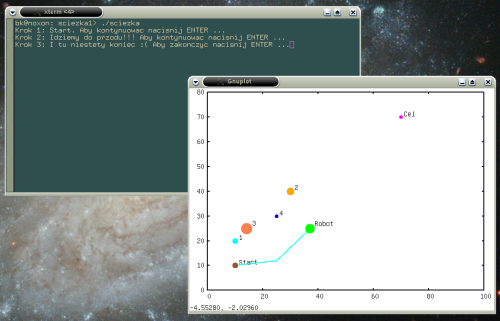

Zawiera przykład rysowania przeszkód symbolizowanych poprzez koła. Demonstruje również możliwość przemieszczania obiektu w postaci robota i rysowanie jego ścieżki.

Zrzut ekranu pokazujący wynik działania programu.
Przykładowa zawartość pliku: "dat/cel.xyr"
70 70 2
Przykładowa zawartość pliku: "dat/start.xyr"
10 10 3
Przykładowa zawartość pliku: "dat/robot.xyr"
37 25 5
Przykładowa zawartość pliku: "dat/przeszkody.xyr"
10 20 3
30 40 4
14 25 6
25 30 2
Przykładowa zawartość pliku: "dat/sciezka.xy"
10 10
25 12
37 25
Kod programu:
#include <iostream>
#include <iomanip>
#include <fstream>
#define PLIK_SCIEZKI "dat/sciezka.xy"
#define PLIK_ROBOTA "dat/robot.xyr"
#define PLIK_STARTU "dat/start.xyr"
#define ROZM_STARTU 3
#define ROZM_ROBOTA 5
#define X0 10
#define Y0 10
void ZainicjalizujStanPoczatkowy()
{
ofstream StrmWy;
StrmWy.open(PLIK_STARTU);
StrmWy << X0 << " " << Y0 << " " << ROZM_STARTU << endl;
StrmWy.close();
StrmWy.open(PLIK_SCIEZKI);
StrmWy << X0 << " " << Y0 << endl;
StrmWy.close();
StrmWy.open(PLIK_ROBOTA);
StrmWy << X0 << " " << Y0 << " " << ROZM_ROBOTA << endl;
StrmWy.close();
}
#define X1 25
#define Y1 12
void UtworzSciezke1()
{
ofstream StrmWy;
StrmWy.open(PLIK_SCIEZKI,ios::app);
StrmWy << X1 << " " << Y1 << endl;
StrmWy.close();
StrmWy.open(PLIK_ROBOTA);
StrmWy << X1 << " " << Y1 << " " << ROZM_ROBOTA << endl;
StrmWy.close();
}
#define X2 37
#define Y2 25
void UtworzSciezke2()
{
ofstream StrmWy;
StrmWy.open(PLIK_SCIEZKI,ios::app);
StrmWy << X2 << " " << Y2 << endl;
StrmWy.close();
StrmWy.open(PLIK_ROBOTA);
StrmWy << X2 << " " << Y2 << " " << ROZM_ROBOTA << endl;
StrmWy.close();
}
int main()
{
char Opcja;
ZmienEtykiete("Start");
ZmienEtykiete("Cel");
ZmienEtykiete("Robot");
cin >> noskipws;
ZainicjalizujStanPoczatkowy();
cout << "Krok 1: Start. Aby kontynuowac nacisnij ENTER ..." << flush;
cin >> Opcja;
UtworzSciezke1();
cout << "Krok 2: Idziemy do przodu!!! Aby kontynuowac nacisnij ENTER ..." << flush;
cin >> Opcja;
UtworzSciezke2();
cout << "Krok 3: I tu niestety koniec :( Aby zakonczyc nacisnij ENTER ..." << flush;
cin >> Opcja;
}
 1.8.13
1.8.13